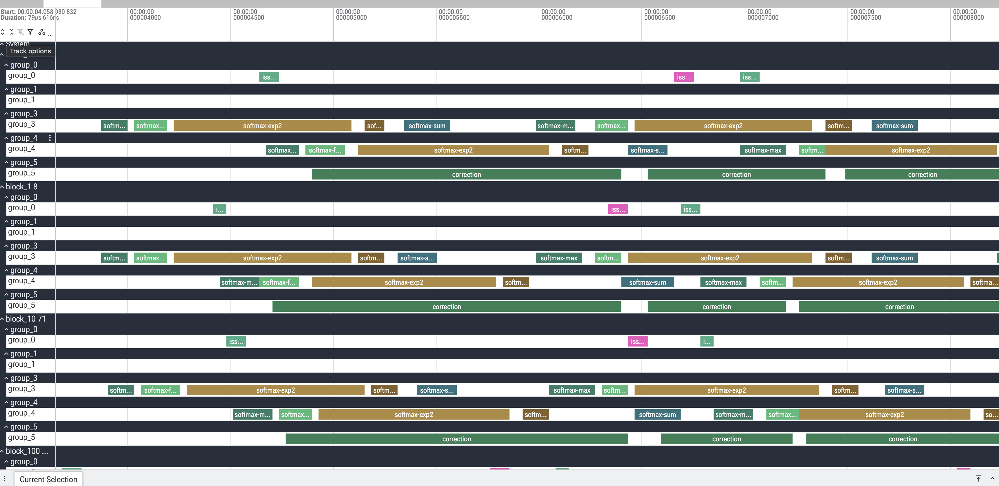

In-kernel profiling with CudaProfiler#
Once a kernel is correct and you have seen how it compiles (see
Compiling and inspecting), the next question is usually where the cycles go. Host-side
timers and nsys tell you how long a launch took, but not how that time splits
across the regions inside one kernel — the TMA loads, the mainloop MMAs, the
softmax, the epilogue.
tvm.tirx.bench.CudaProfiler is a lightweight, in-kernel event tracer for
exactly this. You bracket regions of device code with start / end
markers; at runtime one leader thread per block stamps the GPU global timer into
a buffer you pass in as an ordinary kernel argument. After the launch you read
the buffer back and decode it into per-region durations or a Perfetto timeline.
It is not zero cost — every event is a %globaltimer read plus a global
store, and every thread in the region pays a block fence — so it is a
profiling/debugging tool, not something you leave on in production.
The kernel#
The kernel below brackets a load / compute / store sequence. The
compute region runs a 4000-iteration FMA loop so it clearly dominates. Events
are a plain enum.Enum whose integer values start at 0 and index a names list.
from enum import Enum
import numpy as np
import tvm
from tvm.script import tirx as T
from tvm.tirx.bench import CudaProfiler, export_to_perfetto_trace
NUM_BLOCKS, BLOCK, NUM_GROUPS = 4, 128, 1
WRITE_STRIDE = NUM_BLOCKS * NUM_GROUPS # >= number of (block, group) lanes
PROF_SIZE = 4096 # uint64 slots in the profiler buffer
N = NUM_BLOCKS * BLOCK
class Ev(Enum):
Load = 0
Compute = 1
Store = 2
EV_NAMES = ["load", "compute", "store"]
@T.prim_func
def profiled_kernel(out_ptr: T.handle, inp_ptr: T.handle, prof_ptr: T.handle):
out = T.match_buffer(out_ptr, (N,), "float32")
inp = T.match_buffer(inp_ptr, (N,), "float32")
prof = T.match_buffer(prof_ptr, (PROF_SIZE,), "uint64")
T.device_entry()
bid = T.cta_id([NUM_BLOCKS])
tid = T.thread_id([BLOCK])
idx = bid * BLOCK + tid
# Construct the profiler inside the kernel; only the leader thread writes.
p = CudaProfiler(prof, write_stride=WRITE_STRIDE, num_groups=NUM_GROUPS,
default_leader=(tid == 0))
p.init(0) # group_id = 0; also stamps the buffer header at slot 0
p.start(Ev.Load)
x: T.f32 = inp[idx]
p.end(Ev.Load)
p.start(Ev.Compute)
acc: T.f32 = T.float32(0)
for _ in range(4000):
acc = acc * T.float32(1.0001) + x
p.end(Ev.Compute)
p.start(Ev.Store)
out[idx] = acc
p.end(Ev.Store)
p.finalize() # mark this (block, group) lane done
Run it and read the trace#
Allocate a zeroed uint64 buffer, pass it as the last argument, then read it
back. Each record is one uint64: the high 32 bits are the timestamp, the low
32 bits a packed tag, so decoding is plain bit-twiddling on the host.
dev = tvm.cuda(0)
exe = tvm.compile(tvm.IRModule({"main": profiled_kernel}),
target=tvm.target.Target("cuda"), tir_pipeline="tirx")
inp = tvm.runtime.tensor(np.ones(N, "float32"), device=dev)
out = tvm.runtime.tensor(np.zeros(N, "float32"), device=dev)
prof = tvm.runtime.tensor(np.zeros(PROF_SIZE, "uint64"), device=dev)
exe(out, inp, prof)
dev.sync()
prof_np = prof.numpy()
opens, spans = {}, {}
for i in range(1, len(prof_np)):
word = int(prof_np[i])
if word == 0:
continue
ts, tag = word >> 32, word & 0xFFFFFFFF
block = (tag >> 12) // NUM_GROUPS
event_idx, event_type = (tag >> 2) & 0x3FF, tag & 0x3 # 0=start 1=end 2=instant 3=finalize
if event_type == 0:
opens[(block, event_idx)] = ts
elif event_type == 1:
spans.setdefault(block, []).append((EV_NAMES[event_idx], ts - opens[(block, event_idx)]))
for block in sorted(spans):
print(f"block {block}:", ", ".join(f"{n}={d}ns" for n, d in spans[block]))
export_to_perfetto_trace(prof_np, "cudaprofiler.perfetto-trace", EV_NAMES)
Durations are stable to within a few percent (they shift with GPU clocks):
block 0: load=32ns, compute=8704ns, store=64ns
block 1: load=96ns, compute=8704ns, store=64ns
block 2: load=96ns, compute=8704ns, store=64ns
block 3: load=96ns, compute=8704ns, store=64ns
export_to_perfetto_trace writes cudaprofiler.perfetto-trace from the same
records; drop it onto https://ui.perfetto.dev for an interactive timeline. Because
the timestamps come from the global %globaltimer (not a per-SM cycle counter),
events from different blocks share one time axis and are directly comparable.
On a real kernel#
The same markers, sprinkled through a warp-specialized FlashAttention-4 kernel
(one group per warp-group via num_groups), produce a per-warp-group
timeline of the whole pipeline:

One CTA of an FA4 forward kernel. group_0 issues the TMA loads
(issue-tma-*), group_3 / group_4 run the softmax pipeline
(softmax-max / -exp2 / -sum), and group_5 runs the
correction — the overlap between the producer and consumer warp-groups is
exactly what intra-kernel profiling is for.#
The API#
Construct the profiler inside the kernel body and call four methods:
init(group_id)— once per thread;group_idselects the sub-track and stamps the buffer header at slot 0.start(event_type, leader=None)/end(event_type, leader=None)— open and close a region. Every thread executes them, but only the leader stores a record.finalize(leader=None)— write a terminal record for this lane.
Constructor arguments:
profiler_buffer— theuint64buffer you pass into the kernel.write_stride— how far each leader advances between writes. Must be>=the number of(block, group)lanes so per-lane streams never collide;NUM_BLOCKS * NUM_GROUPSis the tight value, a persistent-grid kernel usesnum_sms * num_groups.num_groups— independent sub-tracks per block. Use1for a plain kernel; in a warp-specialized kernel give each warp-group its owngroup_idand leader so their timelines don’t mix.default_leader— the predicate for the one writing thread (override per call withleader=).profiler_enabled— passFalse(or a false-yPrimExpr) to turn every method into a no-op, so you can leave the markers in and compile them out.
CudaProfiler emits start / end / finalize; instant (event type
2) is reserved in the wire format and understood by the decoder, but there is no
method that produces one.
Groups and granularity#
A block’s threads are partitioned into num_groups logical groups, and the
trace’s unit is one (block, group) lane — each becomes its own track. The
partition is yours: a group can be a warp-group, a single warp, or any set of
threads, and it does not have to align to a warp (the recording path has no
warp-collective op — just a predicated per-thread store and a block fence). Two
rules:
a thread joins a group by calling
init(group_id), which points its write cursor at that group’s lane;exactly one thread per group is the leader and actually writes — pick it with a predicate that is true for one thread in the group, and it must be a thread that called
initfor that group.
Because each leader has its own cursor, one start / end statement records
into every group at once: each leader stamps its own lane.
Groups as warp-groups. A 256-thread block is two warp-groups; give each its
own group_id and make its first thread the leader. Here the two warp-groups do
different amounts of compute, so their tracks have different durations:
NUM_GROUPS = 2
p = CudaProfiler(prof, write_stride=NUM_BLOCKS * NUM_GROUPS, num_groups=NUM_GROUPS,
default_leader=(tid % 128 == 0)) # first thread of each warp-group
if tid < 128:
p.init(0)
else:
p.init(1)
# ... load ...
p.start(Ev.Compute)
if tid < 128:
for _ in range(1000): # warp-group 0: light
acc = acc * T.float32(1.0001) + x
else:
for _ in range(5000): # warp-group 1: heavy
acc = acc * T.float32(1.0001) + x
p.end(Ev.Compute)
block 0 group 0: load=96ns, compute=3040ns, store=64ns
block 0 group 1: load=96ns, compute=10816ns, store=64ns
block 1 group 0: load=96ns, compute=3072ns, store=64ns
block 1 group 1: load=128ns, compute=10784ns, store=64ns
Groups that are not warp multiples. A 128-thread block split 48 / 48 / 32 works the same way — the leaders are the base thread of each group, and the 48-thread groups (1.5 warps, crossing warp boundaries) each record a correct track:
NUM_GROUPS = 3 # groups [0, 48) [48, 96) [96, 128)
p = CudaProfiler(prof, write_stride=NUM_BLOCKS * NUM_GROUPS, num_groups=NUM_GROUPS,
default_leader=((tid == 0) | (tid == 48) | (tid == 96)))
if tid < 48:
p.init(0)
elif tid < 96:
p.init(1)
else:
p.init(2)
block 0 group 0: load=96ns, compute=4544ns, store=64ns # 48 threads (1.5 warps)
block 0 group 1: load=64ns, compute=4512ns, store=96ns # 48 threads, crosses warp lines
block 0 group 2: load=64ns, compute=4576ns, store=64ns # 32 threads
What each call wraps#
The methods are thin wrappers around the T.cuda.timer_* intrinsics, which
lower to small __device__ helpers emitted into the generated CUDA. The
profiler keeps two per-thread "local" scratch slots — the running tag and
write cursor — and every record is written by:
// tvm_builtin_get_timestamp() == asm("mov.u32 %0, %globaltimer_lo;")
profiler_buffer[profiler_write_offset[0]] =
((uint64_t)tvm_builtin_get_timestamp() << 32) | (profiler_tag[0] | event_bits);
profiler_write_offset[0] += profiler_write_stride; // global store; only the leader runs this
init computes BLOCK_GROUP_IDX = block_idx * num_groups + group_id, writes
the header profiler_buffer[0] = ((uint64_t)num_groups << 32) | num_blocks from
block 0 / threadIdx.x == 0, and seeds this lane’s cursor to 1 +
BLOCK_GROUP_IDX and tag to BLOCK_GROUP_IDX << 12. start writes the record
(event_bits = (event << 2) | 0) then __threadfence_block(); end fences
then writes (| 1); finalize fences then writes 0x3. The fence runs on
every thread in the region, only the store is leader-only — that fence is what
brackets the region’s memory traffic, and why the markers perturb the kernel.
Usage notes and caveats#
Zero the buffer before the launch. The decoder treats
0as “empty” and reads the grid shape from slot 0, which only block 0 / thread 0 writes.Exactly one leader per (block, group). Each thread keeps its own cursor, initialized to
1 + block_group; two leaders in the same lane write the same offsets and clobber each other. Usetid == 0or lane 0 of the group’s leader warp.Call ``init`` once, before any ``start``. It seeds each thread’s tag and cursor; without it both are garbage.
Size ``write_stride`` and the buffer together. The largest slot a lane touches is
1 + block_group + (records_per_lane - 1) * write_stride; over-allocate, unused slots stay0and are skipped.``%globaltimer_lo`` is only the low 32 bits of the nanosecond timer. It wraps about every 4.29 s (
2**32ns), so a region straddling a wrap decodes to a bogus duration. Resolution is coarse (tens of ns), so very short regions read 0 or a single tick.No payload.
start/endrecord only a timestamp and the event id; encode anything extra in the event id (a distinctEvmember) or innum_groups.It is not free. Two stores plus two block fences per region. Profile, read the numbers, then build with
profiler_enabled=False.